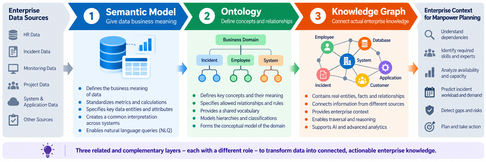

Quantity
Estimate the number of employees and support hours required for expected demand.
AI · Data Architecture · Workforce Planning
A Knowledge-Driven and Probabilistic AI Approach.
A decision-support architecture that combines enterprise data,
a semantic model, ontology, knowledge graphs, forecasting,
probabilistic graphical models and an AI agent to support
skill-based and risk-aware manpower planning.
01 · Overview
Traditional manpower planning often concentrates on the number of available employees. This project extends the concept by considering skills, experience, system knowledge, availability, incidents, workload, SLA risk and uncertainty.
Estimate the number of employees and support hours required for expected demand.
Match expected incidents and systems with the skills, experience and knowledge required.
Identify periods, shifts and skill areas where insufficient coverage may create operational or SLA risk.
02 · Architecture
The semantic model provides business meaning, the ontology formalizes concepts and relationships, and the knowledge graph connects actual enterprise entities and facts. The analytical data platform remains the data foundation and should not be replaced by the graph.

Semantic Model Ontology Konwledge Graph.jpg
03 · Semantic & Knowledge Layer
Gives structured data a consistent business meaning and defines measures, relationships and terminology such as incidents, capacity, utilization and SLA compliance.
Possible technology: Power BI Semantic Model
Defines domain concepts, classifications and relationship rules such as
Employee → hasSkill → Skill and
Incident → requiresSkill → Skill.
Possible technology: Protégé, OWL 2, RDF/RDFS, SHACL, RDFLib
Stores the actual facts and relationships required for skill-based planning: employees, technologies, incidents, systems, projects, availability and SLAs.
Possible technology: Neo4j / Cypher or RDF GraphDB / SPARQL
04 · Forecasting & Uncertainty
Forecasting estimates expected workload. Probabilistic Graphical Models add uncertainty, dependencies and scenario analysis so planning is not based on a single deterministic number.
Estimate incident volume, incident type, severity, workload, skill demand and required employee capacity.
Tools: Python, pandas, scikit-learn, statsmodels, XGBoost
Model directed probabilistic dependencies and calculate scenario probabilities under uncertainty.
Tools: pgmpy, PyMC or Pyro
Represent interactions between variables where a clear direction of influence is unnecessary or unknown.
Tools: pgmpy / Python
Example output
Illustrative example from the project concept — not measured production results.
05 · AI Agent
The AI Agent is the decision-support and orchestration layer. It does not replace the Knowledge Graph, forecasting models or PGMs. Instead, it combines their outputs to interpret the situation and recommend an action.
Enterprise context, skills, systems, incidents, employees, availability and relationships.
Predicted workload, probability, uncertainty, scenario risk and future skill demand.
06 · Implementation Roadmap
The following eleven steps are taken directly from the existing ToDos.md.
They are shown as open implementation steps; detailed sub-tasks, technology choices and deliverables
remain documented in the original ToDo file.
Define the manpower-planning domain, classes, hierarchies, properties, skills, incidents, roles, SLAs, shifts and validation scenarios.
Identify reusable HR, skills, incident, performance, workload and support datasets and evaluate quality, licensing and fitness for the PoC.
Define update frequencies, incremental loads, CDC, error handling, retries, quality checks, logging, monitoring and model refresh.
Design landing, curated and analytical layers and define stable keys, history, lineage, retention and the graph export interface.
Map ontology concepts to graph nodes and relationships, load enterprise entities and build queries for skill gaps and dependencies.
Identify variables and directed dependencies, learn probabilities, test inference and validate scenario analysis against historical periods.
Model non-directional interactions among workload, capacity, system conditions and SLA risk where causal direction is not required.
Connect enterprise context with probabilistic reasoning so the system can answer both what is connected and what is likely to happen.
Forecast incident volume, severity, resolution workload, required skills and employee capacity for future planning periods.
Translate forecasted capacity and skill gaps into concrete, explainable planning options and recommended actions.
Use Knowledge Graph context, forecasts and PGM outputs to diagnose problems, explain risks and recommend controlled actions.
07 · Project Files